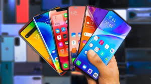

Készítette: Szél Ferenc
Kezdőlap | Telefon típusok | Technológia
A mobiltelefonok az elmúlt két évtizedben teljesen megváltoztatták az emberek életét. Míg korábban csak hívásokra használtuk őket, ma már szinte mindenre képesek: internet, fényképezés, zenehallgatás, navigáció, fizetés – és még sok minden más.
Egy modern okostelefon több eszközt is helyettesít egyszerre. Nemcsak kommunikációs eszköz, hanem munkaeszköz, szórakoztató központ és személyi asszisztens is. Az alkalmazások segítségével pedig szinte bármilyen tevékenységet elvégezhetünk velük.
Ha érdekel, hogyan fejlődtek a telefonok, látogasd meg a GSMArena oldalát.